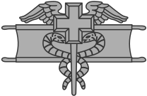

Earn the Expert Field Medical Badge through rigorous testing of combat medic skills. Five days of day and night land navigation, written exams, warrior tasks, and medical lanes that prove you are the Army's best combat medic.
Day 1 is the screening gate that eliminates candidates before they ever touch a medical lane. The ACFT must be passed to standard, followed immediately by a comprehensive written exam covering medical doctrine from the TC 4-02 series — the Whiskey's bible.
Land navigation is tested both day and night. Night land nav is the killer — candidates must find points using only a compass and pace count in unfamiliar terrain with zero ambient light. Approximately 15% of all candidates fail land navigation alone.
Candidates who fail any Day 1 event are eliminated before the medical lanes even begin. This phase rewards disciplined study and consistent physical training.
Medical lanes are the #1 elimination point in EFMB testing. Approximately 40% of all failures occur here. Candidates must perform 12+ medical tasks tested to a zero-deficiency standard — one missed step on any single task and you fail the entire lane.
The tasks cover the full spectrum of combat medic skills: casualty assessment, airway management, hemorrhage control, IV therapy, and litter evacuation. Each task has a detailed sequence of steps that must be performed in exact order under time pressure.
There is no partial credit. A missed tourniquet high-and-tight, a skipped reassessment, or an improperly secured airway adjunct results in an immediate NO-GO. Practice every task to muscle memory.
Warrior tasks are where many medics get caught off guard. The EFMB demands that combat medics are soldiers first — proficient in weapons handling, CBRN operations, communications, and demolitions. Medics who focus only on medical skills neglect these tasks at their peril.
The culminating event is the 12-mile ruck march with a 35-pound minimum load, completed in under 3 hours. After four days of intense testing, the ruck march tests grit and endurance. Approximately 10% of remaining candidates fail here — usually from pacing errors or heat casualties.
Completing the ruck march earns you the Expert Field Medical Badge — one of the rarest and most respected qualifications in the Army.
Winter has the fewest EFMB testing iterations. Cold weather affects dexterity — numb fingers make IV starts, tourniquet application, and fine-motor medical tasks significantly harder. However, cooler temperatures reduce heat casualties during the 12-mile ruck march.
Spring is the most popular EFMB testing season. Comfortable temperatures mean optimal conditions for medical lanes — your hands work properly, and the ruck march is conducted in manageable weather. Most units schedule their primary EFMB iteration in spring.
Summer EFMB testing is brutal. Heat casualties during the 12-mile ruck march spike in summer months. High temperatures also degrade focus and concentration during medical lanes — when every single step matters, heat-induced fatigue leads to missed procedures.
Fall is the second most popular testing season and offers arguably the best overall conditions. Cooler temperatures are ideal for the 12-mile ruck march, and comfortable weather keeps hands dexterous for medical lanes. Many units schedule a fall iteration as a re-test opportunity.
EFMB testing is conducted at the unit level across various CONUS installations. Schedules vary by division and brigade — coordinate with your unit medical training NCO for specific dates. Most units conduct 2–4 iterations per fiscal year.
| Window | Typical Period | Notes | Season |
|---|---|---|---|
| Spring Iteration | Mar – May | Most common — highest candidate volume | Spring |
| Summer Iteration | Jun – Aug | Heat mitigation required — some units skip | Summer |
| Fall Iteration | Sep – Nov | Second most popular — re-test opportunity | Fall |
| Winter Iteration | Dec – Feb | Least common — cold weather considerations | Winter |
Zero-deficiency grading means perfection is the standard. Medical lanes, warrior tasks, and the 12-mile ruck march eliminate the unprepared.
Every EFMB failure has a type. We built a fix for each one.
Systematic head-to-toe is the foundation. Skip one step and you fail the entire lane. Practice the MARCH algorithm until it's automatic.
IV therapy under stress is a different skill than IV therapy in a classroom. Practice blindfolded, with cold hands, and under time pressure.
Night nav is the killer. If you can't hold a compass bearing and count paces in the dark, you're done before medical lanes even start.
12 miles in under 3 hours with 35 pounds. Train with weight, build your pace, and don't let the last event be the one that breaks you.
Weapons, CBRN, demo, comms — medics neglect these. The EFMB demands you're a soldier first. Don't lose your badge on a task you didn't study.
The TC 4-02 series isn't light reading, but the written exam has no mercy. Know your doctrine cold or go home on Day 1.
Key Takeaway: Medical lanes are the #1 elimination point. Zero-deficiency means one missed step on any task and you fail. Practice every task to muscle memory — casualty assessment, airway management, hemorrhage control, IV therapy. The written exam and land nav will catch the underprepared on Day 1. Train with the same intensity you'd bring to a trauma patient.
Combat Medic Creed
I am a Combat Medic. I serve all members of my team regardless of rank, religion, or creed. I will always place the care of my patients above all else. I will never leave a fallen comrade. I will always be there for my brothers and sisters in arms.
The Expert Field Medical Badge represents mastery of both the healing arts and the warrior's craft. Holders of this badge have proven they can save lives under fire, navigate hostile terrain, and endure the physical demands that break lesser soldiers. They are the Army's finest combat medics — first to respond, last to quit.
Testing dates, medical task breakdowns, study guides, and tips from badge holders — straight to your inbox. No spam. Unsubscribe anytime.